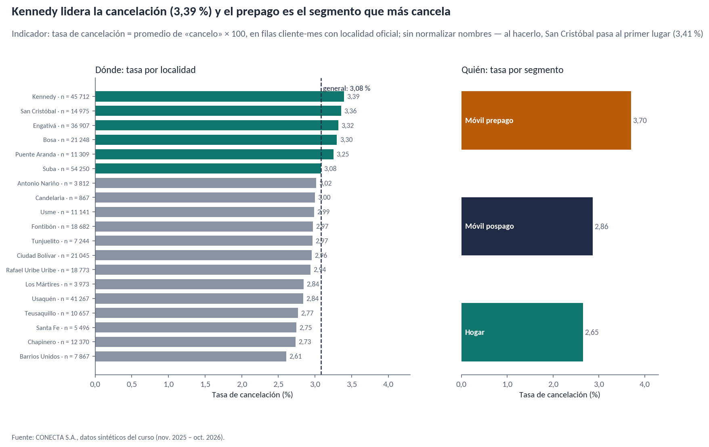
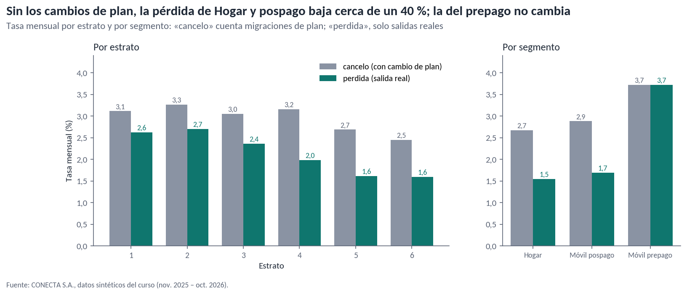
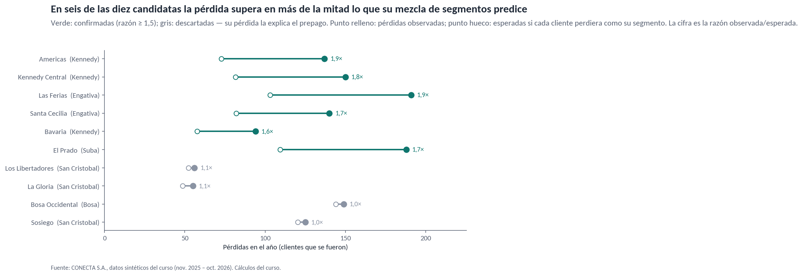
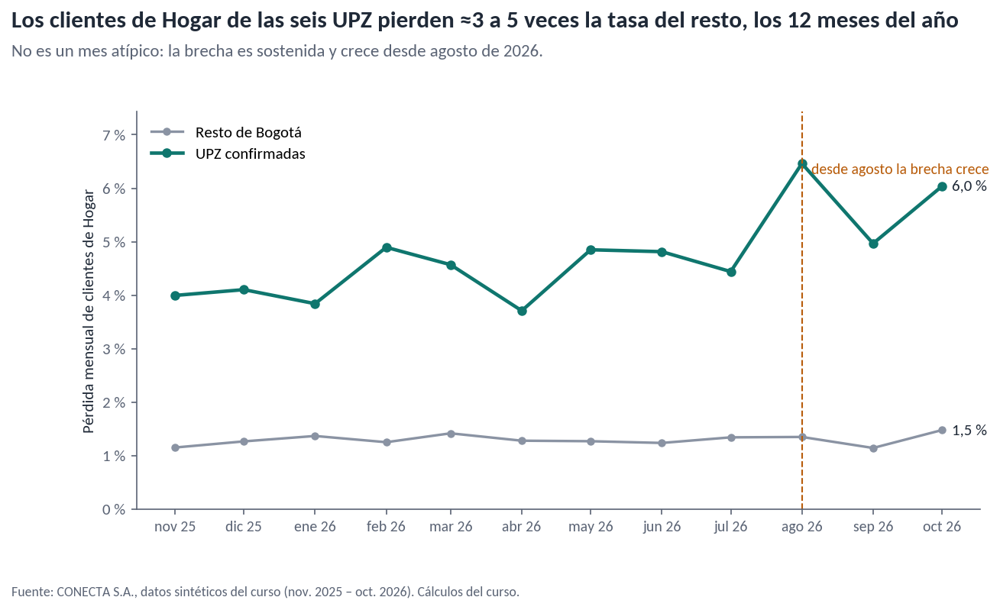
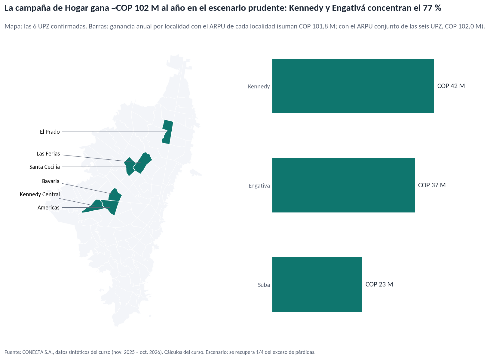
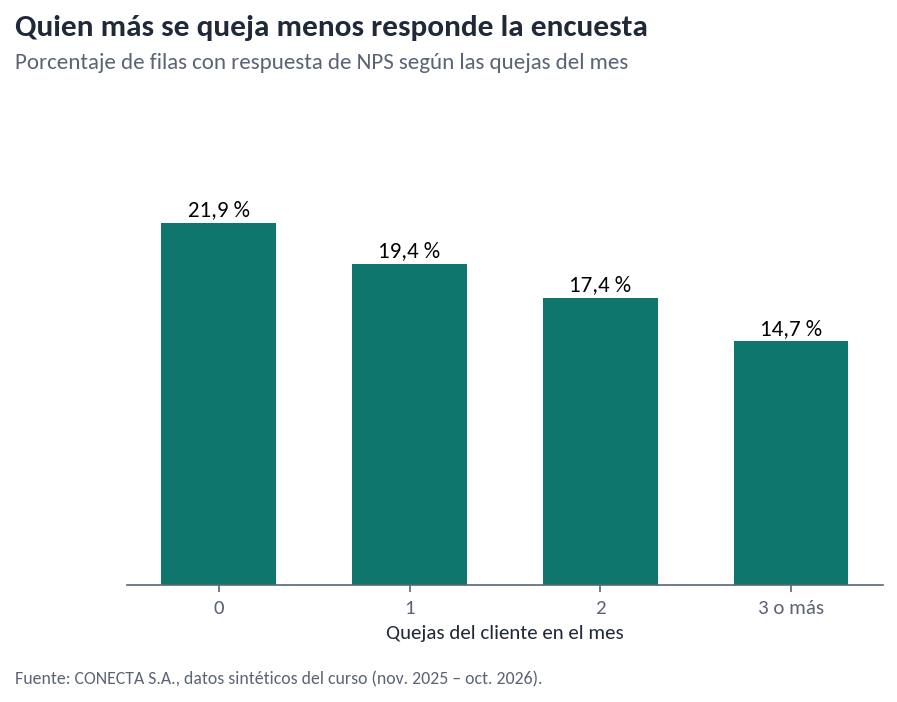

Presentación de avance · CONECTA S.A. · Gerencia de Retención · Proyecto A
Retener a los clientes de Hogar de seis UPZ vale ~COP 102 M al año: proponemos una campaña de hasta COP 116 mil por cliente
Del indicador de cancelación por localidad (S2) al hallazgo verificado y valorado (S4)
Grupo 9 · Mario Daniel Enrique Perez Jimenez
Visualización de Datos y Gerencia de la Información · UNAULA
Comité directivo de diciembre · noviembre de 2026
UNAULA · Visualización de Datos y Gerencia de la Información · Presentación de avance · Grupo 92
La respuesta primero · SCQA
El problema no es de zonas con mucho prepago: es de los clientes de Hogar de seis UPZ, y recuperarlos vale ~COP 102 M al año
S · Situación
El comité reparte en diciembre el presupuesto del primer trimestre de 2027. Retención pide una campaña contra las cancelaciones, y solo vale la pena si cada oferta cuesta menos que el ingreso que protege.
C · Complicación
Las 10 UPZ que más pierden podían ser un espejismo: el prepago pierde 3,72 % al mes en Bogotá y cuatro de ellas tienen 60–72 % de filas prepago.
Q · Pregunta
¿Dónde y para quién hacemos la campaña, y cuánto puede costar como máximo?
A · Respuesta
Para los clientes de Hogar de 6 UPZ de Kennedy, Engativá y Suba, que pierden 3,0× lo esperado: un exceso de ~388 clientes al año, o COP 408 M de ingreso. Si la campaña recupera 1/4, gana ~COP 102 M al año, así que su techo es de ~COP 116 mil por cliente (878 activos).
UNAULA · Visualización de Datos y Gerencia de la Información · Presentación de avance · Grupo 93
Para quién y qué se decide · S1, Tarea 1
El comité no necesita saber quién cancela más: necesita saber dónde una oferta evita pérdidas y cuánto puede gastar en ella
Para quién
El comité directivo de diciembre (presidencia, finanzas y las vicepresidencias comercial, de experiencia de cliente y de red). Domina churn, ARPU y NPS, pero no lee estadística de zonas pequeñas. Retención propone y el comité decide.
Qué decide
El monto en pesos de la campaña de retención del primer trimestre de 2027 y su reparto entre zonas y líneas.
Restricción: cada oferta debe costar menos que el ingreso que protege, y solo se puede retener la cancelación evitable (no el cambio de plan).
Qué pregunta
¿En qué zonas se concentra la pérdida de clientes evitable, frente al tamaño de su base y al ingreso en juego, para decidir dónde concentrar la campaña y cuánto invertir?
Punto de partida (S1): el informe del trimestre anterior hacía creer que los clientes se desplomaban, pero los activos bajan 3,7 % (de 30 000 a 28 886) y la cancelación registrada ronda el 3,1 % mensual.
UNAULA · Visualización de Datos y Gerencia de la Información · Presentación de avance · Grupo 94
Lo que mostraban los datos · S2
Con los datos crudos, Kennedy lideraba la cancelación (3,39 %) y el prepago era el segmento que más cancelaba

Lo que concluimos entonces
- Tasa general del 3,08 % mensual. Kennedy, San Cristóbal, Engativá, Bosa y Puente Aranda la superan, y Engativá y Bosa lo hacen 12 y 11 de los 12 meses.
- El prepago cancela 3,70 %, ~1,4 veces el Hogar. Las localidades con más prepago cancelan más (r = 0,56, una correlación entre localidades).
- Era provisional: 7 100 filas tenían la localidad mal escrita y «cancelo» mezclaba bajas con cambios de plan.
UNAULA · Visualización de Datos y Gerencia de la Información · Presentación de avance · Grupo 95
Lo que hubo que corregir · S3
Contar solo la pérdida real baja la tasa de 3,1 % a 2,4 % y cambia la lista: 10 UPZ candidatas

Qué cuenta como cancelación
Usamos «perdida»: la cancelación sin el «cambio de plan». Quien cambia de plan sigue en CONECTA (es el 22,6 % de las cancelaciones y el 78 % de esos cambios es de Hogar).
3,1 % → 2,4 %
Tasa mensual: «cancelo» en el crudo frente a «perdida» en la tabla limpia. Hogar pasa de 2,7 % a 1,5 % y el prepago se queda en 3,7 %.
351 127
Filas limpias (36 450 clientes) tras quitar 1 765 duplicados, 150 cuentas internas y 1 cuenta de prueba, y normalizar 38 grafías a 19 localidades (anexo A).
10 UPZ
Candidatas: el 10 % peor entre las 95 UPZ con ≥ 80 clientes (pérdida del 3,2 % al 4,5 %). Seis en Kennedy, Engativá y Suba, y cuatro en San Cristóbal y Bosa.
UNAULA · Visualización de Datos y Gerencia de la Información · Presentación de avance · Grupo 96
El hallazgo resiste · S4, Tareas 2 y 3
Seis de las diez candidatas pierden más de 1,5 veces lo que predice su mezcla de segmentos, y el exceso está todo en Hogar

Las confirmadas: 6 de 10 (razón ≥ 1,5)
Américas 1,89 · Las Ferias 1,85 · Kennedy Central 1,84 · El Prado 1,72 · Santa Cecilia 1,71 · Bavaria 1,63. Las 4 de San Cristóbal y Bosa (1,03–1,13) pierden lo que predice su prepago. Robusto: con 1,3 se confirman las mismas 6, y con 1,7 solo sale Bavaria.
El segmento: Hogar
En las 6 UPZ, los clientes de Hogar pierden 3,02 veces lo esperado; el pospago (0,98) y el prepago (1,03) pierden lo normal. La campaña va para Hogar, no para el prepago.
UNAULA · Visualización de Datos y Gerencia de la Información · Presentación de avance · Grupo 97
Qué lo explica y qué no · S4, Tareas 3 y 4
No es la red ni el precio: los clientes de Hogar de estas UPZ se van insatisfechos todo el año, y más desde agosto
| Hogar: confirmadas frente al resto | 6 UPZ | Resto |
|---|
| NPS medio (responde ~18 %) | 6,8 | 8,1 |
| Pérdidas voluntarias | 86,5 % | 70,9 % |
| Tasa desde agosto | 5,8 % | 1,3 % |
| Quejas por mes (red) | 0,17 | 0,19 |
| Uso de datos, mediana (GB) | 265 | 259 |
| Lo que pagan (precio) | 87 703 | 85 695 |
| Pérdidas con < 6 meses | 14,7 % | 15,7 % |
Verde: lo que acompaña la pérdida. Gris: lo que queda descartado (iguales o +2,3 %). Mecanismo probable, no probado.

UNAULA · Visualización de Datos y Gerencia de la Información · Presentación de avance · Grupo 98
Cuánto vale · S4, Tarea 4
Las 6 UPZ pierden COP 408 M al año en clientes de Hogar de más; recuperar una cuarta parte vale ~COP 102 M
Exceso 387,5 clientes/año (579 observadas − 192 esperadas) × ARPU COP 87 703/mes × 12 = COP 408 M/año de ingreso que se va
Ganancia anual · escenario prudente (recupera 1/4)
COP 102,0 M
Con otro escenario (recupera 1/2)
COP 203,9 M
Costo máximo por cliente (prudente / 878 activos)
COP 116 121
- La fracción recuperada es un supuesto del caso, no un dato: por eso mostramos dos escenarios y fijamos el techo con el prudente.
- Clientes activos: los 878 clientes de Hogar distintos de las 6 UPZ con fila en octubre de 2026. Por encima de ~COP 116 mil por cliente, la campaña pierde plata.
UNAULA · Visualización de Datos y Gerencia de la Información · Presentación de avance · Grupo 99
El gráfico principal · S4, Tarea 5
Campaña de Hogar en 6 UPZ de Kennedy, Engativá y Suba: ~COP 102 M al año, y Kennedy y Engativá concentran el 77 %

Dónde
Américas, Kennedy Central y Bavaria (Kennedy); Las Ferias y Santa Cecilia (Engativá); El Prado (Suba).
Cuánto
Kennedy COP 41,8 M · Engativá 36,8 M · Suba 23,2 M (escenario prudente).
Las barras usan el ARPU de cada localidad y suman COP 101,8 M. El total de COP 102,0 M usa el ARPU conjunto de las 6 UPZ.
UNAULA · Visualización de Datos y Gerencia de la Información · Presentación de avance · Grupo 910
Lo que le pedimos al comité
Pedimos aprobar hoy una campaña de retención para 878 clientes de Hogar con un techo de COP 102 M al año
La decisión que pedimos
Campaña de retención para los 878 clientes activos de Hogar de las 6 UPZ confirmadas: contacto, mejora de plan o visita técnica, no un descuento a ciegas.
Cuánto vale
~COP 102 M al año si recupera 1/4 del exceso (~204 M si recupera la mitad). Techo: ~COP 116 mil por cliente.
Próximos pasos
1) Revisión técnica en sitio y averiguar qué cambió en agosto. 2) Costear las acciones. 3) Medir cada mes la pérdida de Hogar de las 6 UPZ frente a su esperada de 1,55 % (hoy ≈3 a 5 veces más) en un tablero de Power BI.
Lo que no decimos: la causa exacta. El NPS lo responde ~18 % y no falta al azar, así que lo usamos como señal y no como prueba. Las otras 4 candidatas (San Cristóbal y Bosa) son prepago normal: si se actúa allí, es una campaña de segmento para toda Bogotá, no de zona.
Datos sensibles y uso de IA: cliente_id y las coordenadas son datos personales, así que solo mostramos agregados por UPZ. Usamos un asistente de IA para resolver y revisar los notebooks y armar esta presentación, comprobando cada cifra contra los datos.
UNAULA · Visualización de Datos y Gerencia de la Información · Presentación de avance · Grupo 911
Anexo A · La calidad de los datos · S3, Tareas 1 a 3 · No se expone
Los datos tenían problemas de las cuatro categorías de calidad; el que cambió la conclusión fue el «cambio de plan»
| Problema (categoría de Wang & Strong) | Regla | Filas afectadas |
|---|
| «cancelo» cuenta el cambio de plan como salida (contextual) | Se crea «perdida», la cancelación sin cambio de plan | 2 464 |
| Filas duplicadas exactas (intrínseca) | Se eliminan | 1 765 |
| Cuentas con pago 0 todo el año: empleados y pruebas (contextual) | Se eliminan 150 cuentas | 1 800 |
| Cuenta de prueba CNX-PRUEBA-01 (intrínseca) | Se elimina | 1 |
| 38 grafías para 19 localidades; 6 para 3 planes (representacional) | Se normalizan según codigo_upz y el catálogo | 7 025 / 7 024 |
| Latitud y longitud intercambiadas (intrínseca) | Se intercambian de vuelta | 1 039 |
| Coordenadas nulas (completitud) | Se conservan nulas: imputarlas inventaría ubicaciones | 5 264 |
| NPS sin responder, y no al azar: baja de 21,9 % a 14,7 % con quejas (completitud) | No se imputa; se reporta con su sesgo | 275 553 |
| UPZ con pocos clientes: tasa inestable | Fuera del ranking las de < 80 clientes (quedan 95 de 102) | — |
Resultado: 351 127 filas cliente-mes y 36 450 clientes. Quitar duplicados y cuentas internas casi no mueve la tasa (3,09 % → 3,10 %); quitar el cambio de plan la baja a 2,4 %.
UNAULA · Visualización de Datos y Gerencia de la Información · Presentación de avance · Grupo 912
Anexo B · Robustez y preguntas del comité · No se expone
El resultado aguanta otro umbral y los 12 meses; con «cancelo» se habría dejado fuera a Bavaria
Robustez por umbral
| Umbral de la razón | Confirmadas | Cambio |
|---|
| ≥ 1,3 | 6 de 10 | las mismas 6 |
| ≥ 1,5 (el del caso) | 6 de 10 | — |
| ≥ 1,7 | 5 de 10 | sale Bavaria (1,63) |
La mayor razón fuera de las candidatas es 1,40: ninguna UPZ se quedó fuera por poco.
Robustez por periodo
La pérdida de Hogar de las 6 UPZ va del 3,7 % al 6,5 % mensual (el resto, ~1,3 %) los 12 meses. Antes de agosto era 4,35 % y desde agosto es 5,83 %.
Si no hubiéramos limpiado (contrafactual con «cancelo»)
- La esperada de Hogar sube de 1,55 % a 2,67 % y la razón se atenúa.
- Solo se confirmarían 5 UPZ: Bavaria queda en 1,36 y una zona con problema real queda fuera.
- La magnitud no se infla: ~351 clientes ≈ COP 369 M con todo el flujo, y ~382 ≈ COP 402 M sobre las mismas 6 UPZ.
La encuesta de NPS
